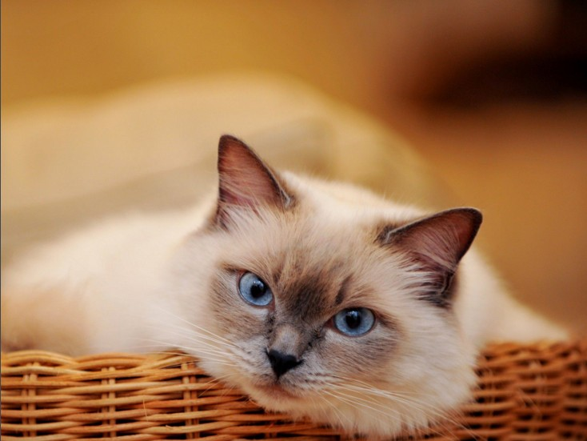

布偶猫的体毛属于中长型，不会缠结在一起，质地柔滑。它的尾巴蓬松，颈部通常带"围脖"，而臀部的体毛也比较长。定期梳理毛发会让布偶猫感到十分舒服。布偶猫是最漂亮的纯种猫之一，带有独特的单色点或双色点的毛。体色有海豹色、蓝色，巧克力色、丁香色，红色，奶油色。
布偶猫
布偶猫是全身特别松弛柔软，像软绵绵的布偶一样。该猫体型大，身体长、肌肉发达、胸部宽、颈粗而短，发育期长，幼猫要4年左右才能完全发育成熟。其特征是头大而呈楔形，头顶扁平，眼睛为深蓝色，吻部呈圆形，短鼻子上略有凹陷，有的脸上有"V"形斑纹，颈部被毛较长，属毛长猫类。布偶猫手套色前脚掌上好像戴着手套，两只手套呈白色，大小相似，且不超出腿和脚掌形成的角度。后腿上白色靴子向上延伸至后脚踝关节，整个身体下方由下巴至尾部也都是白色。布偶猫有三种颜色图案：双色、手套和重点色。这些图案各分6种颜色：海豹色、蓝色、巧克力色、淡紫色、红色和乳色。所有颜色均可附加山猫纹、玳瑁或同时附加山猫及玳瑁。

特征描述
1、头部：呈等边三角形，双耳之间平坦. 面颊顺着面形线而成为楔形。
2、耳朵 ：中等大小，微微张开底部阔. 双耳间距宽阔; 耳尖**而向前倾。
3、眼睛 ：大，明亮，蓝色、椭圆形. 双眼间距宽阔，微微向上扬。
4、鼻子 ：中等长度的鼻子。
5、下巴 ：下巴要发育良好，强壮，并与上唇和鼻子成一直线。
6、体重：布偶猫和缅因猫、西伯利亚猫同属最大的猫之一，公猫通常比母猫体形大。身体结实,肌肉发达，雄性平均体重4.5~9.1KG；雌性平均为3.6~6.8KG